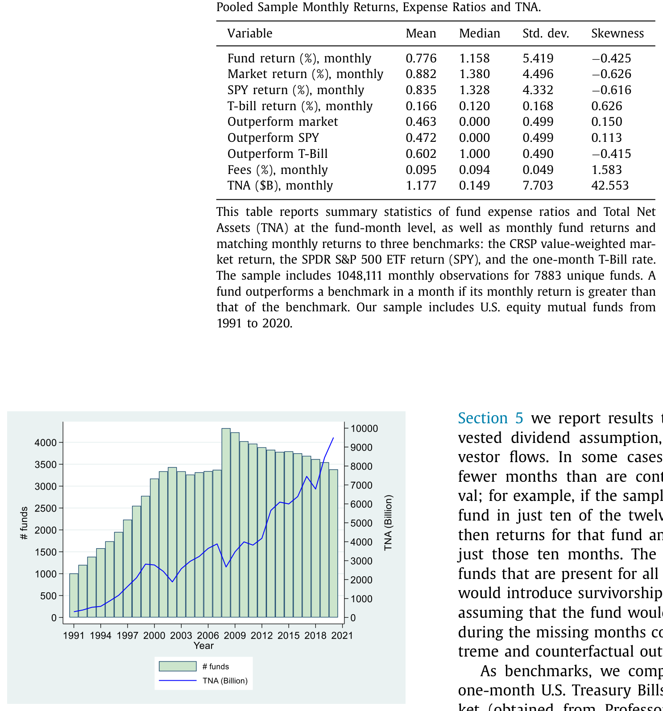
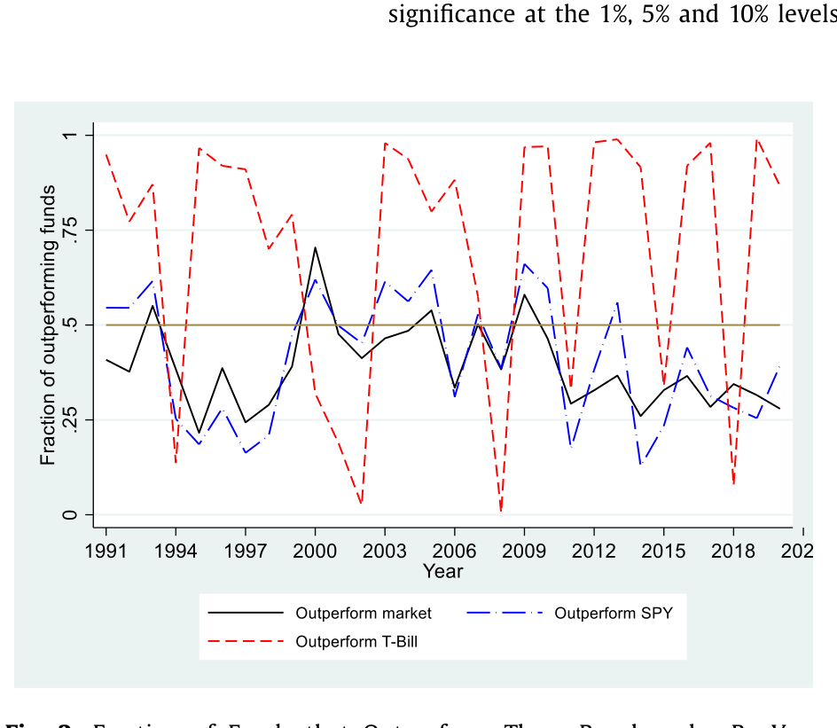
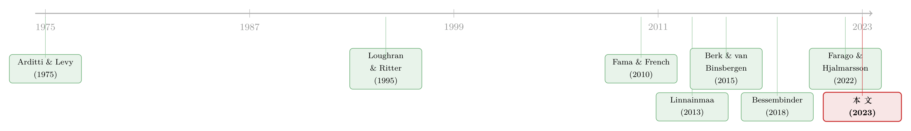

「跑赢大盘」是会过期的：当一只基金的胜率，随着持有年限一年年缩水
本文读的是 Bessembinder, Cooper & Zhang (2023, Journal of Financial Economics)：在 1991–2020 的三十年里，美国股票型共同基金跑赢 SPY 的比例，会随着「衡量收益的时间跨度」拉长而显著下降——按月看有 47.2% 的基金跑赢，按整段样本期的复利收益看只剩 30.3%；用自助抽样 (bootstrap) 把这个口径推到 30 年，跑赢比例更是从 47.5% 崩到 5.5%。这并不是因为基金「越来越差」，而是因为复利把原本近乎对称的月度收益，拧成了一个强烈右偏的长期分布。代价有多大？作者把三十年里基金投资者相对 SPY 的总财富损失，算成了 $1.02 万亿美元。
1 一个会随时间「缩水」的胜率
先讲一件听起来像悖论的事。
如果你随手翻开一只美国股票型共同基金的月度记录，把它和同期的标普 500 ETF（SPY）逐月比一比，你会发现：在大约 47.2% 的月份里，这只基金的月收益高于 SPY。差不多是一半对一半——像扔硬币。一个乐观的投资者完全可以由此推断：长期持有下去，运气总会找补回来，胜负终归是五五开。
可事实是残酷的反面。如果你不再按月去比，而是把基金和 SPY 各自的收益按买入并持有 (buy-and-hold) 的方式复利累积起来，再去比谁的「终值」更高，那么随着比较的时间跨度一路拉长，跑赢的基金比例会一级一级地往下掉：年度口径 41.1%，十年口径 38.3%，到了整段三十年样本期，只剩 30.3%。
也就是说，同样一批基金，只是因为你「拿得更久」，它们跑赢市场的概率就越来越低。 月度看是势均力敌，三十年看是七三开的惨败。
这就奇怪了。胜率怎么会随时间「缩水」？时间不应该是中性的吗——它既不偏袒基金，也不偏袒市场。一只每个月都有近五成机会跑赢的基金，凭什么持有得越久，反而越不可能笑到最后？
这正是 Bessembinder、Cooper 和 Zhang 这篇论文要回答的问题。而他们给出的答案，几乎和「基金经理水平」无关，却和一个被金融学反复念叨、却又常常在实践中被忽视的数学事实有关：算术平均（arithmetic mean）不是几何平均（geometric mean）。
2 真正关键的一步：复利如何把对称的月度收益「掰弯」
我们先把这件事的物理直觉讲透——因为这是全文的中心，其余所有结果都是它的回声。
一只基金一个月的收益 \(r_t\)，它的横截面分布大体是对称的。论文 Table 1 里，月度基金收益的偏度系数 (skewness) 是 −0.425，甚至略微左偏；月度收益的中位数 1.158% 还高于均值 0.776%。换句话说，按月看，基金收益里几乎看不到什么「右偏」。
但长期收益不是月收益的简单相加，而是它们的连乘。买入并持有 \(T\) 个月的累积收益是
$$ R^{BH}_{i} = \prod_{t=1}^{T}\left(1 + r_{i,t}\right) - 1 $$
连乘这件事，会做一件对称加法永远做不到的事：它把分布往右拽。道理不难想——一连串还算正常的月度收益乘在一起，偶尔几只基金会因为持续踩中而滚出天文数字般的回报（论文里，442 只基金的全样本复利收益超过 SPY 的两倍，160 只超过三倍）；但任何一只基金，最差也就是亏光本金，跌到 −100% 就到底了。上不封顶，下有地板——连乘的结果必然是一条长长的右尾，加上一个被死死压在左边的众数。
于是就有了那个被高中教材都写过、却最容易被长期投资者遗忘的不等式。对于一组有波动的收益，算术平均总是不小于几何平均：
$$ \bar{r}_A = \frac{1}{T}\sum_{t=1}^{T} r_{i,t} \;\;\ge\;\; \bar{r}_G = \left(\prod_{t=1}^{T}\left(1 + r_{i,t}\right)\right)^{1/T} - 1 $$
波动越大，这道鸿沟越宽。而真正决定你三十年后口袋里有多少钱的，是几何平均——是那个连乘出来的复利终值，不是那个被到处引用的算术平均。
这里就埋下了全文最锋利的一刀：金融学衡量基金业绩的几乎所有主流工具——阿尔法 (alpha)、夏普比率 (Sharpe ratio)、Fama-MacBeth 回归的拟合值、特征排序组合的平均收益——统统是建立在短期（通常是月度）收益的条件或无条件算术平均之上的。 它们度量的是 \(\bar{r}_A\)。而一个真正关心三十年后退休账户余额的投资者，命运系于 \(\bar{r}_G\)。
当一个分布右偏时，绝大多数的实际实现值，都低于那个被右尾抬高的均值。所以「平均而言基金跑赢市场」和「大多数基金跑输市场」可以同时为真，并不矛盾——前者说的是被少数赢家拉高的算术均值，后者说的是中位数的投资者真实经历的命运。
这正是 Bessembinder 一以贯之的母题。他在 2018 年那篇著名的研究里证明：把美股自 1926 年以来的全部财富创造摊开，绝大部分竟来自极少数股票，多数个股的长期表现还不如国库券。那是「个股层面」的右偏；这篇论文则把同一把尺子，量到了「基金层面」。（关于「市场其实只是一小撮巨头」这件事的另一种讲法，可参见《两种市场收益的故事》。）
3 一把度量长期业绩的尺子
要把上面的直觉落成可检验的结论，作者需要一把干净的尺子。
第一件事是选基准。理论上最自然的基准是价值加权市场组合，但正如 Pastor & Stambaugh (2012) 与 Berk & van Binsbergen (2015) 指出的，投资者其实无法直接拿到那条市场指数收益——建仓要交易成本，分红、回购、增发都意味着摩擦。于是作者把主基准定在 SPY ETF：它的收益已经扣掉了一切费用和交易成本，一个普通人只要买入持有、把分红再投资，就能真真切切地复制出来。这是一个「投资者真能拿到手」的机会成本。
第二件事是怎么比。沿用 Loughran & Ritter (1995) 的做法，作者为每只基金构造一个财富比 (wealth ratio)——基金累积终值与「同样的钱投在基准上」累积终值之比：
\(\text{WR}_i > 1\) 意味着这只基金在该段时间里最终跑赢了基准。关键的细节藏在分母里：基准收益的计算月份，永远和基金严格对齐。 如果某只基金在某个十年里只有 105 个月有数据，那么它的基准终值也只用这 105 个月来算。这样做避免了一个常见的陷阱——拿一只只活了三年的基金，去和一条跑满三十年的指数比终值，那是不公平的。
这把尺子还顺手处理了一个老问题：很多业绩研究会把「在样本期最后一年消失的基金」当成赢家剔除掉，从而人为美化整体表现。作者反其道而行——一只在样本中途清盘、退出时还跑输指数的基金，照样被算作输家。
4 数据
数据来自 CRSP 的无生存者偏差共同基金数据库 (CRSP Survivorship-Bias-Free Mutual Fund Database)，区间 1991–2020。样本是美国国内股票型基金，剔除 ETF、目标日期基金、对冲及杠杆基金，并按 Elton et al. (2001) 提示的口径，识别并修正了 CRSP 数据中的若干明显错误（比如有一条记录把费率写成了 146%）。最终样本含 7883 只基金（其中 525 只是指数基金），共 1,048,111 个基金-月观测。
如表 1 所示，池化的月度基金净收益均值是 0.776%，月度费率均值 0.095%；同期 SPY 月收益均值 0.835%，价值加权市场 0.882%。基金平均资产规模 (TNA) 是 $11.77 亿美元，但分布极度右偏，中位数只有 1.49 亿美元。值得记住的两个数字：基金月收益的偏度是 −0.425（不偏右，反而略偏左），而 TNA 的偏度高达 42.553——规模本身就是个右偏怪物，但月度收益不是。

Table 1 表 1：样本月度收益、费用与资产规模的汇总统计
还有一个贯穿全文的硬约束：样本横跨三十年（360 个月），但一只基金平均只在数据库里待 132 个月、约 11 年（标准差 97 个月）。基金有生有死，而且——这是后面反转的伏笔——表现差的基金往往死得早。
5 主要结果：胜率的逐级崩塌
把尺子架好，结论就一级一级落了下来。
其一，胜率随时间单调下降。 跑赢 SPY 的基金比例：月度 47.2% → 年度 41.1% → 十年 38.3% → 全样本 30.3%。而且这不是被小基金拖累的——只看规模最大的一批基金，全样本复利口径下也只有 29.6% 跑赢 SPY。逐年来看（如图 2 所示），在大多数年份里，跑赢三个基准的基金都不到一半。

Figure 2: Fraction of Funds that Outperform Three Benchmarks, By Year. costs, while the fact that less than 50% of funds outper- 图 2：逐年来看跑赢三个基准的基金占比
其二，费用不是全部，但偏度是主角。 你可能会想，跑输是不是因为收费？作者于是看税前（pre-fee）收益。结果很有意思：和 Berk & van Binsbergen (2015)、Fama & French (2010) 一致，税前基金的平均买入持有收益是 394%，高于同期 SPY 的 298%——平均而言，基金经理确实创造了毛收益。 可即便用税前的基金收益，去比扣费后的 SPY，跑赢的基金也只有 45.2%。少数赢家把均值抬了上去，多数基金仍在中位数以下。
其三，自助抽样把效应推到极致。 为了对付「差基金早死」带来的偏差，作者对基金收益做自助抽样，构造组合并推演 30 年。跑赢 SPY 的组合比例，从月度的 47.5%，一路跌到 30 年的 5.5%。横竖都是同一个故事：时间是偏度的放大器。
其四，阿尔法会骗你。 大约每六只基金里就有一只，它的月度市场调整收益（market-adjusted return）算术均值为正——按传统口径，这是只「有本事」的基金——但它的整段生命期市场调整买入持有收益却是负的。算术正、几何负，正是 \(\bar{r}_A \ge \bar{r}_G\) 这道鸿沟在真实数据里的现身。
其五，总账。 全样本里超过三分之二的基金，复利收益跑输扣费后的 SPY；超过 20% 的基金，三十年里连一个月期国库券都没跑赢。把 SPY 作为机会成本、并允许 beta 偏离 1，作者把基金投资者在 1991–2020 这三十年里相对 SPY 的总财富损失，加总成了 $1.02 万亿美元。
6 反转：不是基金更差了，是「平均数」骗了你
到这里，最容易的误读是：「看，主动基金果然不行。」
但论文真正想说的，比「主动 vs 被动」深一层，也克制一层。作者并没有去打那场关于「哪个因子模型、哪个基准更合适」的旷日持久的仗——他们刻意只用一个最朴素的单因子市场模型，因为他们要逼出的，是收益跨期复利这件事本身带来的影响，而不是基准之争。
第一重克制，是认账「差基金早死」会污染横截面平均。这正是 Linnainmaa (2013) 命名的反向生存者偏差 (reverse survivorship bias)：表现差的基金活不久，于是横截面上的「基金平均业绩」被幸存者系统性地抬高了。自助抽样之所以重要，就是因为它在「内生的基金寿命」之外，仍然复现了胜率随时间崩塌的结论——说明这不是寿命差异的人为产物。
第二重、也是更要紧的一重，是对整个文献度量范式的提醒。作者反复强调：SEC 要求基金披露 1、5、10 年的复利收益，标普道琼斯的「SPIVA 记分卡」也比的是复利——可学术界却几乎只盯着月度收益的算术均值（alpha、夏普、Fama-MacBeth 拟合值……）。当收益右偏时，这些算术工具会系统性地误导长期投资者：它们告诉你「平均能跑赢」，而你作为一个具体的人，最可能的命运是落在中位数附近、跑输大盘。
这并不是说阿尔法错了。阿尔法精确地度量了它该度量的东西——条件算术均值。问题在于「用错了场合」：一个三十年不动仓位的退休账户，关心的从来不是算术均值，而是复利终值。把短期的算术均值，外推成长期的财富承诺，才是真正的认知错误。（关于长期复利如何制造出「看上去为零、其实从不为零」的收益幻觉，可参见《被「藏起来」的收益》；关于普通投资者如何被短期业绩牵着走，亦可参见《钱追着「去年的收益」跑》。）
7 文献脉络
这条线索的源头，要追到 Arditti & Levy (1975)——他们大概是最早证明「即便短期收益对称，复利后的长期收益也会正偏」的人。这个数学事实沉睡了很久，直到 Bessembinder (2018) 把它砸进资产定价的现实：他证明美股长期财富创造高度集中于极少数个股，多数个股长期跑不赢国库券。Farago & Hjalmarsson (2022) 随后在 iid 假设下给出了复利长期收益各阶矩的闭式解，指出长期偏度的主要驱动力其实是短期收益的波动率。
与此并行的是共同基金业绩这条更古老的支流：Loughran & Ritter (1995) 贡献了「财富比」这把长期比较的尺子；Fama & French (2010) 与 Berk & van Binsbergen (2015) 确立了「税前基金平均能创造毛收益、扣费后则未必」的经典图景；Linnainmaa (2013) 点破了反向生存者偏差。本文站在这两条支流的交汇处：把「复利制造偏度」的洞见，用「财富比 + 无生存偏差样本 + 自助抽样」的实证装置，第一次系统地按时间跨度铺开在共同基金上。

8 评论与延伸（Q&A + 研究方向）
Q：胜率随时间下降，会不会只是「基金活不久」这一个机械原因？
不是。作者用自助抽样组合专门隔离了这一点：在抽样里基金寿命的内生性被打散，30 年跑赢比例仍从
47.5%崩到5.5%。寿命差异是偏度的一个来源，但不是全部；复利本身就足以制造这条下行曲线。
Q：那基金经理到底有没有本事？
平均意义上「有」——税前买入持有收益
394%高于 SPY 的298%。但「平均有本事」和「多数基金让你跑赢」是两件事。右偏分布下，少数赢家抬高了均值，中位数投资者依旧跑输。这恰恰是本文要你分清的关键。
Q：这是不是又一篇「主动不如被动」的论文？
不完全是。作者刻意回避了基准之争和因子模型之争，只用单因子市场模型，目的是孤立「跨期复利」这一个机制。结论与其说是「别买主动基金」，不如说是「别用短期算术均值去判断长期命运」。
Q：用 SPY 而不是价值加权市场做基准，会不会把结论做反？
SPY 是「投资者真能买到、扣费后」的机会成本，比无法直接复制的指数更贴近真实选择。作者也报告了相对价值加权市场的结果，方向一致。换基准会改变具体数字，但改不了「胜率随跨度下降」这个定性结论。
Q：阿尔法为正、长期却为负，到底是不是矛盾？
不矛盾，是 \(\bar{r}_A \ge \bar{r}_G\) 的必然。任何有波动的收益序列，算术平均都不小于几何平均，波动越大缺口越宽。约六分之一的基金正落在这道缝里：月度市场调整均值为正，生命期买入持有收益为负。
Q：$1.02 万亿的财富损失，是不是被极端假设撑大的？
这个数字依赖「以经 beta 调整的 SPY 收益为机会成本」的设定，换设定量级会变。但它的意义不在小数点，而在量级——它把一个抽象的偏度现象，翻译成了投资者真实账户里少掉的钱。
（b）几个可能的研究问题与提案
-
把这把尺子搬到公司债基金上。【经济故事】公司债（尤其高收益）月度收益本就偏态、且有显著的下行尾部（违约/跳跃），复利后的长期偏度结构可能与股票基金截然不同——甚至可能是左偏被复利放大。这会直接改写信用债基金的长期业绩评价。【可行性】中。数据可用 CRSP/Morningstar 债基库 + TRACE 衍生的基准；难点在于构造一个「投资者真能买到」的债券基准（类似 SPY 的角色，如 AGG/LQD ETF），识别策略与本文同构，doable。
-
外资持有人与长期偏度的交互。【经济故事】若某类基金（或某国市场）的投资者结构更偏外资、换手更高，其月度波动率更大，按 Farago-Hjalmarsson 的逻辑长期偏度应更强、胜率下降更陡。可检验「投资者构成 → 波动率 → 长期胜率衰减速度」这条链。【可行性】中。需要基金层面的持有人构成数据（13F/各国披露），识别上可用持有人结构的外生变动（指数纳入、资本账户开放）做工具。
-
赎回行为是否「吃掉」了右尾。【经济故事】本文假设分红再投资、并在稳健性里允许资金流。但真实投资者往往在大涨后赎回、大跌后追加，等于亲手砍掉了复利右尾、加厚了左尾。把实际资金流叠加进来，投资者真实经历的长期偏度可能比本文的买入持有口径更糟。【可行性】高。CRSP 月度资金流数据现成，构造「资金流加权」的长期收益与买入持有口径对比即可，doable。
-
披露口径的政策含义。【经济故事】SEC 要求披露 1/5/10 年复利收益却不要求风险调整，SPIVA 又用「中途消失即剔除」的口径。能否用一个准实验（如某次披露规则变更）识别「披露长期复利」对资金流与投资者福利的影响？【可行性】低到中，关键看是否存在干净的规则变更时点；若有，DiD 可行。
9 我的判断
这篇论文最漂亮的地方，是它用一个几乎人人学过、却几乎人人在长期决策时忘掉的数学事实——算术均值不等于几何均值——把一座由阿尔法、夏普、Fama-MacBeth 砌起来的实证大厦，轻轻地撬动了一角。它不推翻任何工具，只提醒你这些工具的「保质期」是短期。30.3%、5.5%、$1.02 万亿这几个数字之所以有冲击力，正是因为它们把一个抽象的偏度，钉成了普通人退休账户里的真金白银。
对识别，我的两点保留：其一，全部结论都长在「一段三十年市场历史」之上。作者自己在脚注里承认，若允许长期市场收益本身也波动（Fama & French (2018) 指出市场组合的事前分布也是右偏的），基金收益的波动与偏度会更大——也就是说，本文用单一市场路径得到的衰减曲线，很可能是对真实长期风险的低估，这一点值得在正文里更醒目地交代。其二，自助抽样虽然隔离了寿命内生性，但它打散了收益的时间序列依赖（动量、波动率聚集），而这些恰恰会影响长期复利的形状——抽样口径下的 5.5% 究竟有多少来自纯复利、多少被独立性假设人为放大，值得一个更细的分解。
我最想看到的后续，是把这把尺子接到投资者实际经历的收益上：叠加真实资金流、赎回时点与税收，看看那条本就陡峭的胜率衰减曲线，会不会被投资者自己的行为踩得更低。如果会，那么本文算出的 $1.02 万亿，恐怕还只是个下限。
参考文献
- Arditti, F.D., Levy, H. (1975). Portfolio efficiency analysis in three moments: the multiperiod case. Journal of Finance 30(3), 797–809.
- Berk, J.B., van Binsbergen, J.H. (2015). Measuring skill in the mutual fund industry. Journal of Financial Economics 118(1), 1–20.
- Bessembinder, H. (2018). Do stocks outperform Treasury bills? Journal of Financial Economics 129(3), 440–457.
- Bessembinder, H., Cooper, M.J., Zhang, F. (2023). Mutual fund performance at long horizons. Journal of Financial Economics 147(1), 132–158.
- Elton, E.J., Gruber, M.J., Blake, C.R. (2001). A first look at the accuracy of the CRSP mutual fund database and a comparison of the CRSP and Morningstar mutual fund databases. Journal of Finance 56(6), 2415–2430.
- Fama, E.F. (1972). Components of investment performance. Journal of Finance 27(3), 551–567.
- Fama, E.F., French, K.R. (2010). Luck versus skill in the cross-section of mutual fund returns. Journal of Finance 65(5), 1915–1947.
- Fama, E.F., French, K.R. (2018). Long-horizon returns. Review of Asset Pricing Studies 8(2), 232–252.
- Farago, A., Hjalmarsson, E. (2022). Compound returns. Journal of Financial Economics, forthcoming.
- Linnainmaa, J.T. (2013). Reverse survivorship bias. Journal of Finance 68(3), 789–813.
- Loughran, T., Ritter, J.R. (1995). The new issues puzzle. Journal of Finance 50(1), 23–51.
- Pastor, L., Stambaugh, R.F. (2012). On the size of the active management industry. Journal of Political Economy 120(4), 740–781.